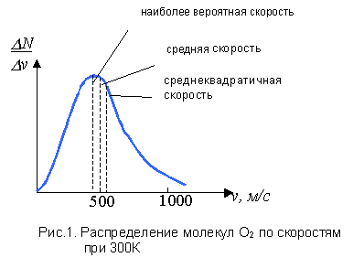

| начало | индекс | выше | назад | вперед | лаб. работы | задачи |
|
1. Вероятность как атрибут больших
систем 2. Стрела времени 3. Проблема тепловой смерти Вселенной и флуктуационная гипотеза Больцмана |
1. Вероятность как атрибут больших систем.
Идея о вероятностном поведении молекул означала новый подход к описанию систем, состоящих из огромного числа частиц (большие системы). Пример с мечеными молекулами в действительности неосуществим, т.к. в принципе невозможно проследить в течение незначительного интервала времени за движением отдельной молекулы. Так же невозможно точно определить координаты и скорости всех молекул макроскопического тела одновременно в данный момент времени.
Задача в этом случае, согласно подходу Максвелла и Больцмана ставится иначе: найти вероятность того, что данная молекула обладает каким-либо определенным значением скорости.
Следует заметить, что до Больцмана Максвелл ввел для описания случайного поведения молекул понятие вероятности, вероятностный (статистический закон) и вывел закон распределения числа молекул газа по скоростям. Поскольку молекулы в газе непрерывно сталкиваются друг с другом и со стенками, некоторые из них будут двигаться очень медленно, а другие - очень быстро. Распределение молекул по скоростям показано на рис.1. (Аналогичный вид имеет распределение молекул по энергии). Как видим, эти распределения несимметричны относительно средних значений скорости (и энергии).

В 1878 г. Больцман, как уже ранее говорилось, применил понятие вероятности ко второму началу термодинамики. В результате ему удалось показать, что второй закон (начало) термодинамики является, кроме прочего, следствием статистических законов поведения большой совокупности частиц.
Здесь необходимо отметить существенное противоречие между термодинамикой, возникшей в рамках механической картины мира и собственно классической механикой.
Дело в том, что законы ньютоновской классической механики являются обратимыми. Другими словами, в классической динамической системе всегда можно, варьируя начальные условия, привести систему в определенное «нужное» состояние. Другими словами, интегрирование дифференциальных уравнений движения сводится к вычислению траекторий движения частицы, которые дают полное описание поведения частицы как в прошлом, настоящем, так и в будущем. Достаточно задать начальные условия и уравнения движения тела, чтобы получить полное описание его движения для любого момента времени.
Здесь мы имеем, таким образом, полную обратимость процессов и их детерминированность (предопределенность). Согласно представлениям МКМ, Творец создал мир и привел его в движение. В дальнейшем этот Мир развивался по своим однозначно детерминированным законам. Как уже ранее говорилось, эта идея получила название «лапласовский детерминизм». Крайним выражением лапласовского детерминизма явилась идея мирового дифференциального уравнения Лапласа, которое описывает движение всех тел Вселенной и дает возможность на основе настоящего описать ее прошлое и определить будущее.
С развитием статистической физики и термодинамики на место причинных динамических законов становятся статистические законы, позволяющие предвидеть эволюцию природы не с абсолютной достоверностью, а лишь с большой степенью вероятности.
Различны с точки зрения лапласовского детерминизма и выводы о возможности управления большими системами. Согласно классической физике, отсутствие элементов вероятности, случайности обеспечивает возможность воздействия на систему, управления системой с совершенно однозначными последствиями.
Однако II начало термодинамики указывает на то, что вследствие необратимого и вероятностного характера протекающих процессов в термодинамических системах они не могут быть управляемы до конца. Известно весьма образное описание этого факта, данное И. Пригожиным и И. Стенгерс «необратимое увеличение энтропии описывает приближение системы к состоянию, неодолимо «притягивающему» ее, предпочитаемому ею перед другими, - состоянию, из которого система не выйдет «по доброй воле».
Еще раз следует подчеркнуть, вероятностное, статистическое поведение является атрибутом, т.е. неотъемлемым качеством больших систем. Важно помнить, что второе начало термодинамики и статистические закономерности утрачивают свою силу для систем с малым количеством объектов.
На это обстоятельство указывал Максвелл, говоря о том, что в системах с малым количеством объектов следствием статистических законов должно стать нарушение второго начала термодинамики.
Понятия вероятности, случайности неотделимы от современного истолкования процессов не только в физических системах, но и, тем более, в системах более сложных, например, биологических. Мы знаем, что важным фактором эволюции является естественный отбор. Однако существуют и другие факторы. Один из них – случайность. Действительно, источниками изменчивости видов служат случайные генные или хромосомные мутации. Особенно важную роль играют случайные процессы в маленьких популяциях.
2. Стрела времени
Время – одно из самых загадочных понятий философии и естествознания. Это – одно из фундаментальных понятий научной картины мира. Блаженный Августин, христианский теолог и церковный деятель (354-430) признавался: пока его никто не спрашивает о том, что такое время, он это понимает, но когда хочет ответить на такой вопрос, попадает в тупик. «Душа моя горит желанием проникнуть в эту необъяснимую для нее тайну» — говорил он.
Нам известно одно неотъемлемое свойство времени – его направленность от прошлого к будущему.
Действительно, при описании любых явлений, с которыми человеку приходится иметь дело, прошлое и будущее играют разные роли [4]. Это справедливо для физики, изучающей макроскопические явления (для микромира, на фундаментальном уровне описания этой направленности времени не существует), биологии, геологии, гуманитарных наук. Почему это именно так и не иначе? Известный физик Эддингтон придумал яркое название «стрела времени».
Английский астрофизик Фрейд Хойл высказал мысль о связи направления времени с направлением процесса увеличение расстояния между галактиками в ходе расширения Вселенной, которое наблюдается в настоящее время. Эту идею поддержал и Эддингтон. Однако расширение Вселенной, о котором свидетельствует т.н. “красное смещение” спектральных линий в излучении удаляющихся друг от друга галактик («разбегания» галактик) не означает расширения в каждом месте, иначе расширялись бы размеры тел, а этого не наблюдается. А поскольку нет этого общего физического влияния, разбегание галактик или расширения Вселенной не может влиять на ход времени в элементарных процессах. Связь с расширением Вселенной может определять только «космологическую шкалу времени».
|
Вот что говорит о времени философ Владимир Порус в беседе с корреспондентом журнала «Знание-Сила» О.Балла: О.Б.: Мы знаем время физическое и историческое, психологическое и социальное, субъективное и объективное, измеряемое и переживаемое. Циклическое, линейное и ветвящееся. Равномерное и скачкообразное. Летящее и стоящее на месте. Пустое и насыщенное. Время математиков и философов, астрономов и поэтов, домохозяек и бездельников. Но что такое время для человека вообще? Как оно вообще возможно и почему мы можем о нем говорить? Что предшествует всем этим многообразным временам, что держит их вместе? В.П.: Мне иногда кажется, что самые глубокие вопросы о времени человек задает в детстве. Ребенку говорят: «Прошел час». Вопрос: час чего прошел? Как ответить? Капля воды, кусочек дерева, моток проволоки, килограмм крупы, я применяю некоторую меру к какому-то предмету, веществу, я могу измерить это. Но когда говорят «час времени», я не знаю, чтo я меряю. Впоследствии ребенок поймет, что мы сравниваем различные процессы и выбираем какой-то из них в качестве меры: колебания маятника, изменения звездного неба, частоту излучения, биение сердца… |
Существует и субъективное восприятие течения времени в результате психологических процессов, которые дают нам “психологическую шкалу времени”. Вопрос о психологическом времени сам по себе очень сложен. Для обычного — «природного» человека в первобытном, доцивилизованном племени время текло то быстро (например, ночью), то медленно (в минуты томительного ожидания) и сосредоточивалось в настоящем (по принципу «здесь и сейчас»). Прошлое при этом было вечным и, в то же время, одномоментным. Мы сохранили много пережитков субъективного восприятия времени. В частности, отмечая юбилейные даты, мы почти отождествляем их с первоначальным событием. У древних такое слияние было в порядке вещей. Известный психолог Эллиот Аронсон считает, что человеческая память является реконструирующей: мы не записываем прошлые события буквально, подобно магнитофону, а воссоздаем воспоминания из фрагментов, заполняя пробелы тем, что, по нашему мнению, должно было быть в тот момент. И эта реконструкция сильно зависит от внешнего мнения — человеку нетрудно внушить, что было в прошлом.
В то же время во Вселенной идет необратимый процесс роста энтропии. Не он ли определяет стрелу времени? Действительно, согласно Больцману, возрастание энтропии означает необратимость процесса и рассматривается как проявление возрастающего хаоса, постепенного “забывания” начальных условий. Таким образом,.термодинамические процессы определяют и «термодинамическую шкалу времени».
Итак, фактически мы имеем три «стрелы времени»:
· космологическую (расширение Вселенной);
· психологическую (субъективное восприятие,
опыт);
· термодинамическую (рост энтропии).
Тот факт, что эти «стрелы времени» в настоящее время в нашей Вселенной совпадают, является одной из загадок современной картины мира.
Говоря о стреле времени, можно упомянуть и различные «экзотические гипотезы» о природе времени, например, гипотеза многомерного времени, выдвинутая физиком Л. Барашенковым.
3. Проблема тепловой смерти Вселенной и флуктуационная гипотеза Больцмана.
Дальнейшее развитие принципа необратимости, принципа возрастания энтропии состояло в распространении этого принципа на Вселенную в целом, что и было сделано Клаузиусом. Итак, согласно второму началу все физические процессы протекают в направлении передачи тепла от более горячих тел к менее горячим, а это означает, что медленно, но верно идет процесс выравнивания температуры во Вселенной. Следовательно, в будущем ожидается исчезновение температурных различий и превращение всей мировой энергии в тепловую, равномерно распределенную во Вселенной. Вывод Клаузиуса был следующим:
1. Энергия мира постоянна.
2. Энтропия мира стремится к максимуму.
Таким образом, тепловая смерть Вселенной означает полное прекращение всех физических процессов вследствие перехода Вселенной в равновесное состояние с максимальной энтропией.
Современное естествознание отвергает концепцию “тепловой смерти” применительно к Вселенной в целом. Дело в том,что Клаузиус прибегнул в своих рассуждениях к следующим экстраполяциям:
1. Вселенная рассматривается как
замкнутая система.
2. Эволюция мира может быть описана как
смена его состояний.
Для мира как целого состояния с максимальной энтропией имеет смысл, как и для любой конечной системы.
Правомочность этих экстраполяций весьма сомнительна, хотя связанные с ними проблемы представляют трудность и для современной физической теории.
Флуктуации. Проблему будущего развития Вселенной пытался разрешить Л. Больцман. Он так же считал Вселенную замкнутой изолированной системой, однако применил к ней понятия флуктуации.
Под флуктуацией физической величины понимается отклонение истинного значения величины от ее среднего значения, обусловленное хаотическим тепловым движением частиц системы.
Больцман рассматривал видимую часть Вселенной как небольшую область бесконечной Вселенной. Для такой области допустимы флуктуационные отклонения от равновесия, благодаря чему в целом исчезает необратимая эволюция Вселенной к хаосу и тепловой смерти.
Следует сказать, что Больцман находился под сильным влиянием теории Ч. Дарвина, называя XIX век веком Дарвина. В эволюционной теории роль флуктуаций так же велика. Ведь эволюция – это путь от случайных флуктуаций видов в сторону возрастания сложности, порядка. В то же время в физике, согласно второму началу – все наоборот, т.е. необратимость ведет к разрушению порядка. Больцман, таким образом, попытался снять это противоречие, создать теорию эволюции системы к равновесию.
Теория флуктуаций развивалась и после трагической смерти Л. Больцмана в 1906 г., в частности, в трудах Эйнштейна и Смолуховского.
В настоящее время проблема самоорганизации сложных систем рассматриваются в рамках нового междисциплинарного направления – синергетики.
Контрольные вопросы
1. Что такое большие системы в
термодинамике?
2. Можно ли точно определить координаты и
скорости всех молекул макроскопического
тела одновременно в данный момент времени?
3. Поясните статистический закон
распределения молекул по скоростям.
4. Поясните утверждение о том, что законы
ньютоновской классической механики
являются обратимыми.
5. Что говорят о возможности полного
управления системами классическая
механика и термодинамика?
6. Что, по словам И. Пригожина и И. Стенгерс
описывает необратимое увеличение энтропии?
7. Для каких систем - больших или малых имеют
смысл статистические законы?
8. Назовите главное свойство времени?
9. Поясните понятие «стрела времени»?
10. Что такое космологическая стрела времени?
11. Что такое термодинамическая стрела
времени?
12. Что такое психологическая стрела времени?
13. Объясните понятие тепловой смерти
Вселенной.
14. Что такое флуктуация?
15. В чем заключается флуктуационная
гипотеза Больцмана?
1. Концепции современного естествознания./
под ред. проф. С.А. Самыгина, 2-е изд. – Ростов
н/Д: «Феникс», 1999.
2. Дубнищева Т.Я.. Концепции современного
естествознания. Новосибирск: Изд-во ЮКЭА,
1997.
3. Ремизов А.Н. Медицинская и биологическая
физика. – М.: Высшая школа, 1999.
4. Суорц Кл.Э. Необыкновенная физика
обыкновенных явлений. Т.1. - М.: Наука, 1986.
4. О человеческом времени. - «Знание-Сила»,
№ , 2000 г.
Права на распространение и использование курса принадлежат
Уфимскому Государственному Авиационному
Техническому Университету